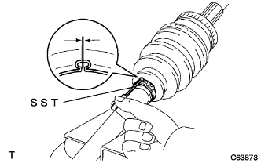
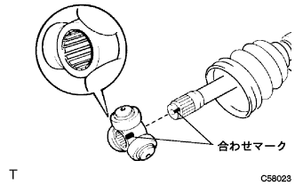

Front drive shaft assembly |
| 1. Front drive shaft dust cover LH installation |
 |
Use SST and press to press the new dust cover to the end (arrow in the figure).
| 2. Front drive shaft dust cover RH installation |
Attach a new hole napping ring.
| 3. Receivable Axle Outboard Joint Boots Installation |
Wrap the protective tape around the outboard joint shaft spline.
Attach the following new parts in order to the outboard joint shaft.
Outboard Joint Boots Clamp No.2
Outboard joint boots
Outboard joint boots clamp
Grease is filled on the joint joint of the outboard joint shaft.
| engine | Outboard diameter | Amount of grease |
|---|---|---|
| 1NZ | - | 155-170g |
| 2NZ | 78mm | 85-100g |
| 2NZ | 85mm | 155-170g |
Attach outboard joint boots into the gaps of the outboard joint shaft ASSY.
| 4. Front Axle Outboard Joint Boots Clamp LH Installation |
Fix the drive shaft ASSY with a vise via an aluminum plate.
 |
Attach the SST to the outboard joint boots clamp and tighten the bolt of the SST while pressing it against the boots.
Fix the SST and tighten the bolt of the SST so that the clearance is a reference value.
Take off the SST.
|  |
Use SST to measure the clearance of the clamp diagram.
| 5. Front Axle Outboard Joint Boots Clamp RH Installation |
| 6. Front Axle Outboard Joint Boots Clamp LH No.2 Installation |
Attach the SST to the outboard joint boots clamp No.2 and tighten the bolt of the SST while pressing against the boots.
Fix the SST and tighten the bolt of the SST so that the clearance is a reference value.
Take off the SST.
 |
Use SST to measure the clearance of the clamp diagram.
| 7. Front Axle Outboard Joint Boots Clamp RH No.2 Installation |
| 8. Lon drive shaft Dampa RH installation |
Attach the drive shaft damper to the reference value of the figure.
| 9. Drive shaft Dampa clamp installation |
For one -touch clamps
 |
Attach a new Dampa Clamp to the drive shaft Dampa and use a flathead screwdriver.
In the case of a hook clamp
Use a needle nose plier to fix the convex and concave portions of the new Damp Clamp.
| 10. Front drive Inn Board Joint Assy LH installation |
Attach the following new parts in order to the outboard joint shaft.
Inn Board Joint Boots Clamp
Inn Board Joint Boots
Inn Board Joint Boots Clamp No.2
Vice the outboard joint shaft with a vise via an aluminum plate.
|  |
Match the tripord joint ASSY to the outboard joint shaft ASSY.
Use a brass bar and a hammer to drive the Tripode Joint ASSY.
 |
Use SST to attach a new shaft snapping INN.
Inn Board Joint Assign Grease to Assy.
| engine | Outboard diameter | Amount of grease |
|---|---|---|
| 1NZ | - | 155-170g |
| 2NZ | 78mm | 85-100g |
| 2NZ | 85mm | 155-170g |
 |
Align the matching mark and attach the inboord joint Association to the outboard joint shaft asser.
| 11. Front drive Inn Board Joint Assy RH installation |
| 21 |
Inn the inboord joint boots are installed in the innboite joint Assie and the outboard joint shaft ASSY groove.
| 13. Front Axle Inn Boots Joint Boots Clamp LH Installation |
For one -touch clamps
 |
Attach the Inn Board Joint Boots Clamp to the Inn Board Joint Boots and use a flathead screwdriver.
In the case of a hook clamp
Use a needle nose plier to fix the convex and concave portions of the Inn Board Joint Boots Clamp.
| 14. Front Axle Inn Boots Joint Boots Clamp RH Installation |
| 15. Front Axle Inn Boots Joint Boots Clamp LH No.2 Installation |
For one -touch clamps
Attach the Inn Board Joint Boots Clamp No.2 to the Inn Board Joint boots and use a flathead screwdriver.
In the case of a hook clamp
Use a needle nose plier to fix the convex and concave portions of the Inn Board Joint Boots Clamp No.2.
| 16. Front Axle Inn Boots Joint Boots Clamp RH No.2 Installation |